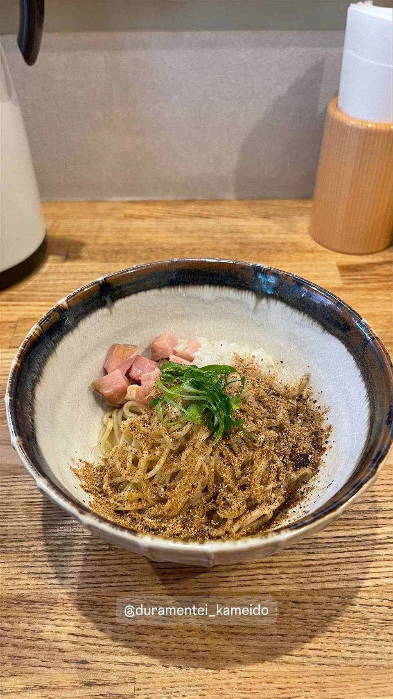

★ また行きたいまぜそば・油そばで5位
DURAMENTEI（ドゥラメンテイ）
白醤油と黒醤油、選べる2種スープと自家製ワンタン
duramentei_kameido
2023年4月、名店「八雲」で修行した店主・下手啓司氏が亀戸に開いた支那そば店。白醤油・黒醤油の2種のスープと、エビと肉がぎっしり詰まったワンタンが評判で、TRYラーメン大賞にもノミネートされた。店名は競走馬「ドゥラメンテ」に由来する。

TRIVIA
豆知識
- 店名は競走馬「ドゥラメンテ」＋「亭」に由来
- 白醤油と黒醤油の2種のスープから選べる
REVIEWS
世間の評判
96ラーメンDB
上品な出汁と海老ワンタンの人気
- 鰹や煮干し、あご出汁など上品な甘みのあるスープが評価されている
- 海老ワンタンをトッピングした一杯を目当てに訪れる人が多いという声がある
- 店主1人での提供のため時間がかかることや土日は限定がないという声もある
ラーメンデータベース 口コミ151件・総合218位・最新 2026-09
| 創業 | 2023年4月19日開店 |
|---|---|
| 系譜 | 名店「八雲」（池尻大橋）出身の店主・下手啓司氏が独立。店名は師である八雲店主の勧めによる命名。 |
| 看板 | ワンタン麺（白醤油・黒醤油）、支那そば |
| こだわり | 白は茨城・龍ケ崎の清原醤油、黒は香川・小豆島の正金醤油の熟成醤油を使い分け、エビと肉がぎっしり詰まった自家製ワンタンが看板。 |
| 掲載・評価 | TRYラーメン大賞2023-2024 新店部門しょうゆ味 5位 |
| どこから | 都心 |
| 行くなら | 行列 |
| 営業時間 | 月 11:30-14:30 火 休み 水〜金 11:30-14:30、17:30-20:30 土 11:30-15:30、17:30-20:30 日 11:30-15:30 |
| 予算 | 昼 ¥1,000～¥1,999 夜 ¥1,000～¥1,999 |
| 場所 | 亀戸 東京都江東区亀戸3丁目45-15 |
| メモ | 7席のL字カウンター、連日行列。 |
食べたもの：ワンタン麺 / 和え麺
地図で見る店の情報ラーメンDBX（その日の営業）Instagram
NEARBY
近い店・同じ系統の店
-
 ★
まぜそば・油そば 本郷三丁目
中華蕎麦にし乃
メニューは2種類のみ、生姜香る肉厚ワンタン入りの中華そば
昼 ¥1,000～¥1,999 夜 ¥1,000～¥1,999
★
まぜそば・油そば 本郷三丁目
中華蕎麦にし乃
メニューは2種類のみ、生姜香る肉厚ワンタン入りの中華そば
昼 ¥1,000～¥1,999 夜 ¥1,000～¥1,999
-
 ★
まぜそば・油そば 亀戸駅
しののめヌードル
淡海地鶏と干し椎茸出汁、手もみ自家製麺の油そば
昼 ¥1,000～¥1,999 夜 ¥1,000～¥1,999
★
まぜそば・油そば 亀戸駅
しののめヌードル
淡海地鶏と干し椎茸出汁、手もみ自家製麺の油そば
昼 ¥1,000～¥1,999 夜 ¥1,000～¥1,999
-
 ★
二郎系(直系) 亀戸
ラーメン二郎 亀戸店
湘南藤沢店主の弟が継いだ非乳化の醤油二郎
昼 ～¥999 夜 ～¥999
★
二郎系(直系) 亀戸
ラーメン二郎 亀戸店
湘南藤沢店主の弟が継いだ非乳化の醤油二郎
昼 ～¥999 夜 ～¥999
-
 ★
まぜそば・油そば 稲荷町
さんじ
豪州でお好み焼き店を営んだ店主の自家焙煎煮干しラーメン
昼 ～¥999 夜 ¥1,000～¥1,999
★
まぜそば・油そば 稲荷町
さんじ
豪州でお好み焼き店を営んだ店主の自家焙煎煮干しラーメン
昼 ～¥999 夜 ¥1,000～¥1,999
-
 ★
まぜそば・油そば 東中神
自家製麺 まさき
水の綺麗な昭島を選んで出した二郎系の汁なしまぜそば
昼 ～¥999 夜 ～¥999
★
まぜそば・油そば 東中神
自家製麺 まさき
水の綺麗な昭島を選んで出した二郎系の汁なしまぜそば
昼 ～¥999 夜 ～¥999
-
 ★
まぜそば・油そば 武蔵境駅
珍々亭（珍珍亭）
1957年創業で油そば発祥の一店とされ、先代考案の拌麺ヒントのレシピが残る
昼 ～¥999 夜 ～¥999
★
まぜそば・油そば 武蔵境駅
珍々亭（珍珍亭）
1957年創業で油そば発祥の一店とされ、先代考案の拌麺ヒントのレシピが残る
昼 ～¥999 夜 ～¥999